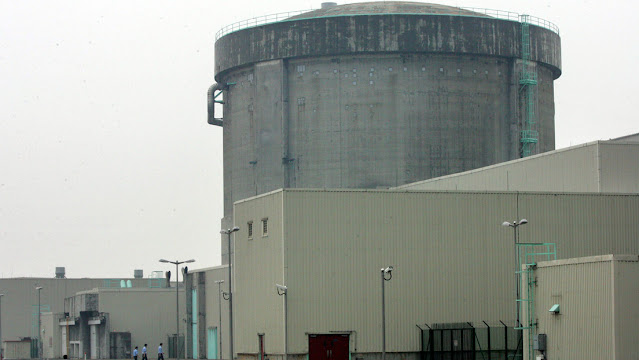

CANDU, EL RUINOSO PROYECTO NACIONAL

Los reactores CANDU 6 de la central nuclear de Qinshan, en la provincia china de Zhejiang, son tomados como referencia para el proyecto de la quinta central nuclear argentina. Crédito: Reinhard Krause / Reuters.
Por Cristian Basualdo
Uno de los proyectos de inversión de Nucleoeléctrica es el de la quinta central nuclear, denominado Proyecto Nacional. Se trata de un modelo CANDU 6 con una potencia bruta del orden de 700 megavatios, que por ahora solo existe en los papeles. La empresa estatal tiene 3 centrales nucleares en operación, y 2 proyectadas: la cuarta (modelo Hualong One), y la quinta (modelo CANDU 6).
El diseño CANDU es de origen canadiense (el nombre proviene de la expresión CANadá Deuterio Uranio), consiste en un moderador de agua pesada y combustible de uranio natural en un reactor de tubos de presión. El CANDU 6 fue un modelo de exportación de la década de 1970, que Canadá vendió a Argentina, Corea del Sur, Rumania y China.
,
Los defensores del Proyecto Nacional enarbolan argumentos técnicos, como por ejemplo, que permite la utilización de la capacidad industrial instalada y desarrollada para la extensión de vida de la Central Nuclear Embalse (modelo CANDU 6). También argumentos económicos, como la disminución de la importación de hidrocarburos para generar electricidad en centrales térmicas, o que la central se pagará a sí misma con la venta de la electricidad que genera.
,
Sin embargo, el reactor CANDU es un proyecto ruinoso para el país desde el punto de vista de evaluación del costo-beneficio. Así lo demuestra un estudio publicado por Fundar con el título “La generación nucleoeléctrica en Argentina y el mundo”, cuyo autor es Alfredo Caro, ex director del Instituto Balseiro. Considerando un costo de la generación de energía eléctrica de 65 dólares por megavatio hora (65 USD/MWh), y un costo de operación, mantenimiento y combustible de 32 USD/MWh.[1] Si el CANDU se financiara con un crédito de 6.000 millones de dólares, a 20 años con el 7% de interés, la cuota anual sería de 560 millones de dólares. Bien superior al valor de la electricidad producida por una central de 700 megavatios, que vende su energía a 65 USD/MWh, que es de 320 millones de dólares al año, asumiendo un factor de disponibilidad del 80%.[2]
El Estado tendría, en suma, que subsidiar la actividad. A esto se añade que, si se relaciona el costo de capital (6.000 millones de dólares) a la potencia del reactor (700 megavatios), el costo del kilovatio asciende a 8.500 dólares, bien por encima de los costos promedios de otras tecnologías.[3] La inversión en el CANDU da resultados aún más negativos si se considera que el diseño reclama un cambio de los tubos del reactor a los 30 años, a un costo aproximado de 1.500 o 2.000 millones de dólares.[4]
El informe hace notar que, si se construyera sin un crédito de China, sino año tras año con fondos presupuestarios del Estado, la conclusión es la misma: esos 6.000 millones de dólares son recursos públicos que no estarán disponibles para otras obligaciones del Estado. “El valor fuera de escala para CANDU es, en parte, lo que ha hecho que esa tecnología no sea ofrecida por ningún país exportador de reactores de potencia (excepto China, en respuesta al pedido de Argentina)”, señaló Alfredo Caro.
***
A lo expresado hasta aquí, quiero agregar que si se considera el costo de desmantelamiento del reactor al final de su vida útil, se hace más evidente el quebranto económico de la inversión. El desmantelamiento de la Central Nuclear Embalse fue estimado en 1.800 millones de dólares por un funcionario de Nucleoeléctrica.[5] La cifra coincide con el costo previsto en Canadá para desmantelar el reactor Gentily II (CANDU 6).
Las negociaciones de Argentina con China para la financiación de reactores nucleares comenzaron en 2010. El espacio de una nota periodística no alcanza para un recorrido por dichas negociaciones hasta la actualidad. No obstante, una cosa es segura: a China solo le interesa vender el Hualong One, para mantener la cadena de producción de su flamante modelo. Mientras que los funcionarios del átomo argentinos, asociados con los industriales metalúrgicos del sector nuclear, quieren un CANDU para repetir las enormes ganancias que les dejó la extensión de vida de la Central Nuclear Embalse. El Proyecto Nacional es un ejemplo de privatización de los beneficios y socialización de las pérdidas.
En septiembre de 2014, Nucleoeléctrica y China National Nuclear Corporation (CNNC) firmaron un contrato marco por el suministro de un CANDU, tomando como referencia los CANDU 6 instalados en Qinshan. Esto llevó a Nucleoeléctrica a firmar acuerdos con CANDU Energy y con China Zhongyuan Engineering Corporation (CZEC), subsidiaria de CNNC.
Durante la administración Macri se suspendió el proyecto CANDU. Juan José Gil Gerbino, por aquellos años asesor de la Subsecretaría de Energía Nuclear, explicó que “no se pudo superar el hecho de que en definitiva Nucleoeléctrica se quedaba con toda la responsabilidad y en ambos lados del mostrador, gerenciando y ejecutando contratos con una enorme cantidad de interfaces, cada una con potencial fuente de conflictos, adicionales y riesgos invaluables. Es decir, no estaban dadas las condiciones para que no sea un contrato ruinoso para el Estado argentino”.
Otro aspecto desfavorable del Proyecto Nacional es que no hay diseños CANDU “post Fukushima”.[6] Para el CANDU argentino se definieron decenas de cambios mayores que prácticamente implicaban un rediseño de la central. Gil Gerbino señaló que “la Argentina, con un PBI menor a la cuarta parte de Canadá y sin ser la dueña original del diseño, estaba dispuesta a gastar de 800 a 1.000 millones de dólares en la modernización del diseño CANDU”.
Los actuales directores de Nucleoeléctrica, que asumieron en abril de 2021, reactivaron el proyecto CANDU y anunciaron la fabricación de las partes “para salvar a la industria nuclear nacional”. Hasta ahora solo se realizaron tareas administrativas, tales como establecer una base de datos de cambios de diseño de centrales nucleares del tipo CANDU 6, para las cuales Nucleoeléctrica solicitó el año pasado un crédito presupuestario de 303 millones de pesos a la Secretaría de Energía de la Nación.
Referencias:
Para estimar los costos de operación, mantenimiento y combustible se usaron los valores reportados por la Agencia Internacional de Energía para 2020, a pesar de que estos valores corresponden a uranio enriquecido que es más caro que el combustible usado en Argentina, y que para 24 países dan un valor promedio de 32 USD/MWh.
El cálculo es el siguiente: 700 MWe x 24 horas/día x 365 días/año x 0,8 x 65 USD/MWh = USD 320 millones al año.
Los reactores de uranio natural resultan más costosos por unidad de energía producida que los de uranio enriquecido. Para comparar, el costo de las dos unidades Hualong One que China construyó en Pakistán (Karachi-2 y Karachi-3) fue de 5.000 dólares por kilovatio.
Datos de World Nuclear News, 2018. La extensión de vida de la Central Nuclear Embalse costó 2.149 millones de dólares.
Expediente del Estudio de Impacto Ambiental del Proyecto Extensión de Vida, Secretaría de Ambiente de la Provincia de Córdoba, Expediente N.º 0517-021445/2016, fs. 12802.
A principios de este siglo, los canadienses trabajaron en una versión actualizada conocida como CANDU 6 mejorado, pero nunca se construyó ninguno. Todos los proyectos conceptuales para modernizar los CANDU fueron discontinuados.
.